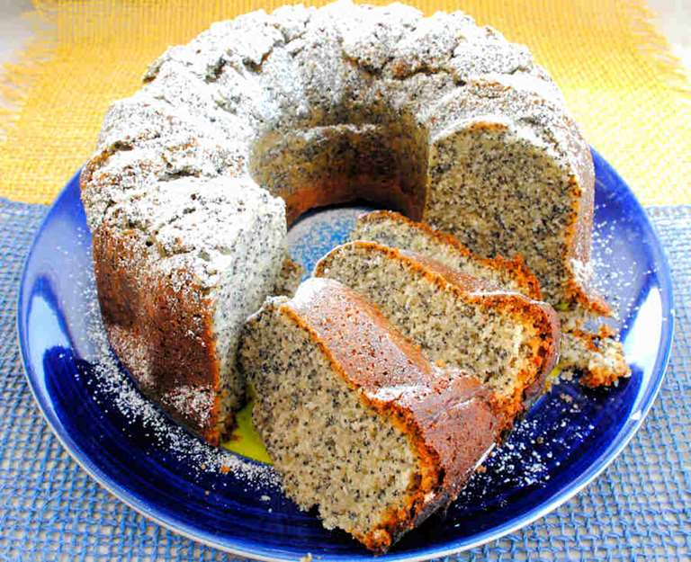

Poppyseed Cake

Ingredients
- 4 eggs
- 1 cup sugar
- 1 can evaporated milk
- 1 can poppyseed
- 1 1/2 tsp baking soda
- 3 cups flour
- 3/4 cups oil
- dash of salt
- powdered sugar
- Bundt Pan
Steps
- Preheat oven to 350 degrees
- Mix flour and backing soda
- Beat eggs and sugar together until fluffy
- Beat in oil
- Mix in 1/2 of dry ingrideants then mix in 1/2 can evaporated milk
- Mix in remaining dry ingrideants then mix in reamaining evaporated milk
- Sprinkle with a dash of salt
- Add in poppyseed and mix
- Pour in an ungreased bundt pan.
- Bake for 50-55min, until a toothpick comes out clean